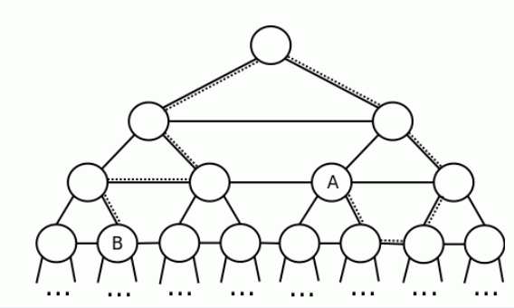

Mirko and Slavko have a new board game. The game board resembles a complete infinite binary tree. More precisely, the board consists of nodes and two-way roads connecting them. The root node is located at the
top of the board and we say it is at level zero. Each node has exactly two children, the left child and the
right child , located in the lower-left and the lower-right directions of the parent node. The level of a
child node is one greater than the level of the parent node. In addition to roads connecting a parent node with its children, there are roads connecting all of the nodes at a particular level – for each level, starting from the leftmost node, there is a road connecting each node to the next node to the right on the same level.

Figure 1: The second test example below
Each path through the game board is a sequence of steps, each moving from a node to a different node via
a single road. Each step can be described by a single character as follows:
· character „1‟ describes moving from a node to its left child,
· character „2‟ describes moving from a node to its right child,
· character „U‟ describes moving from a node to its parent,
· character „L‟ describes moving from a node to the next node to the left on the same level,
· character „R‟ describes moving from a node to the next node to the right on the same level.
For example, if we were to start at the root node and take the sequence of steps „221LU‟ we would end up in the node denoted with the letter „A‟ in the figure above.
TASK
Write a program that will, given two nodes on the board, find the smallest number of steps needed to go from one node to the other. The two nodes are given by specifying paths from the root node to them. If the two paths lead to the same node, the answer is zero.